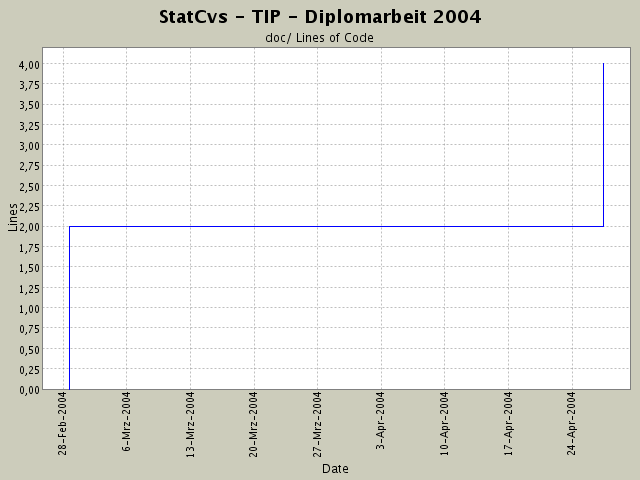

Summary Period: 2004-02-28 to 2004-04-27
[root]/doc

Total Lines Of Code:
4 (2004-06-13 13:05)
| Author | Changes | Lines of Code | Lines per Change |
|---|---|---|---|
| hirsch | 2 (100.0%) | 4 (100.0%) | 2.0 |
endlich die fehlenden Dateien hinzugefuegt
2 lines of code changed in:
UserdataVO und LoginPruefer angefangen, DB-Schema ist angepasst auf EL mit neuer Struktur für Loginprüfung
2 lines of code changed in:
Generated by StatCvs v0.2-dev